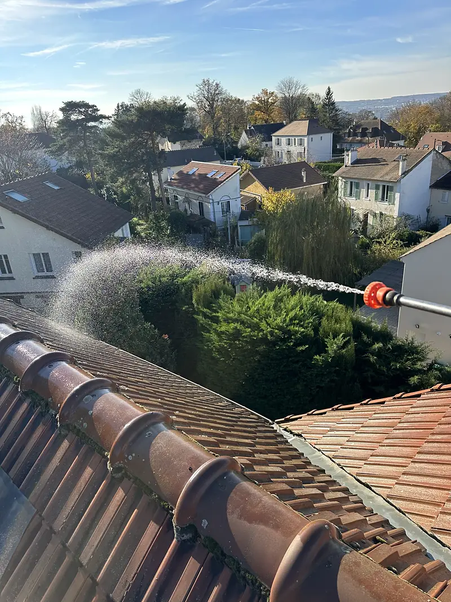
Nettoyage toiture
Redonnez de l’éclat à votre toiture, sans attendre qu’il soit trop tard.
Devis pour ce serviceDémoussage, rénovation complète, Velux ou bandes de rive : H-Renovation vous accompagne à chaque étape, pour l’étanchéité, la sécurité et la durabilité de tous types de toitures, en tuiles, zinc ou ardoise.
Anatomie d’un toit
Survolez ou touchez une partie du toit : vous verrez son nom, son rôle et la prestation qui s’en occupe.
La surface du toit : tuiles, ardoises ou zinc, posées rang par rang.
Mousses et lichens qui retiennent l’eau et fragilisent la couverture.
Lumière et aération pour les combles, posée dans le pan du toit.
Les 15 prestations toiture
Chaque intervention commence par un devis gratuit. Prix sur devis, selon la surface, l’accès et l’état de la toiture.

Redonnez de l’éclat à votre toiture, sans attendre qu’il soit trop tard.
Devis pour ce service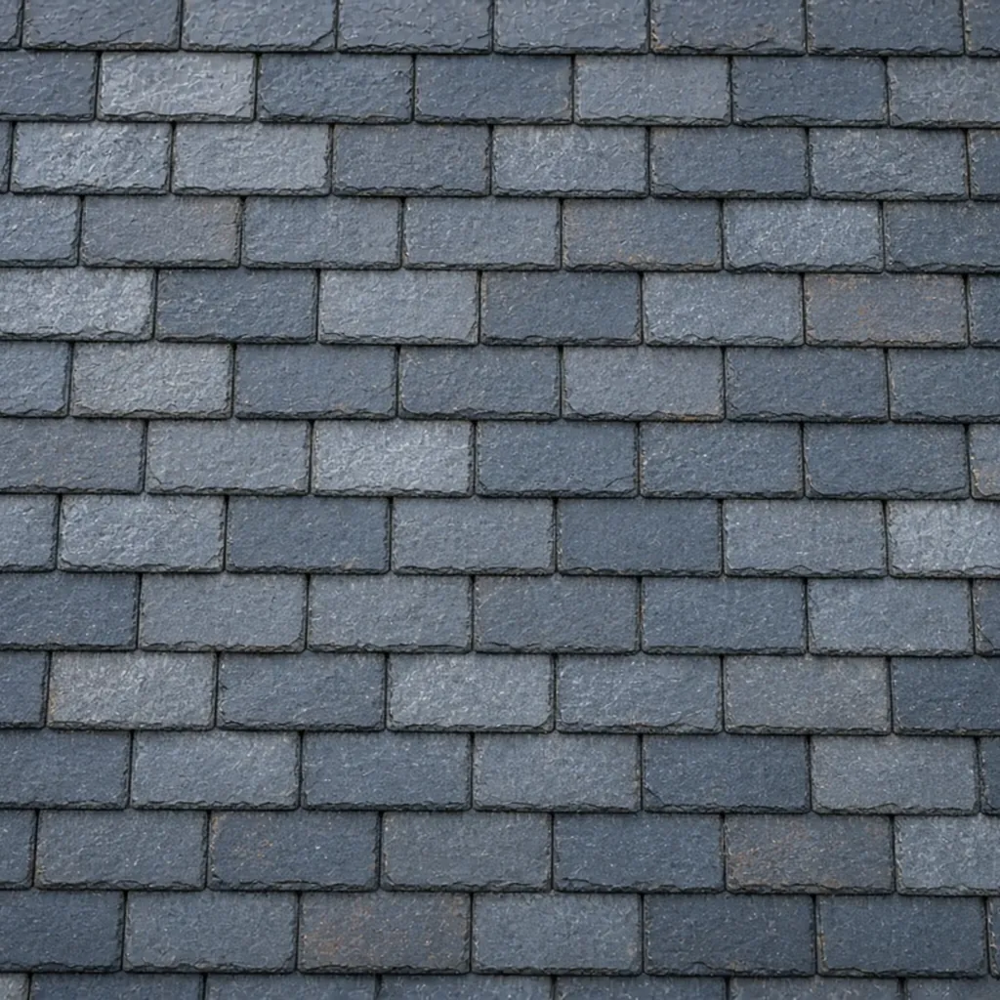
Protégez durablement votre toit contre l’humidité, les infiltrations et les mousses grâce à un traitement hydrofuge professionnel.
Devis pour ce service
Éliminez mousses, lichens et salissures pour préserver la santé et la durée de vie de votre toiture.
Devis pour ce service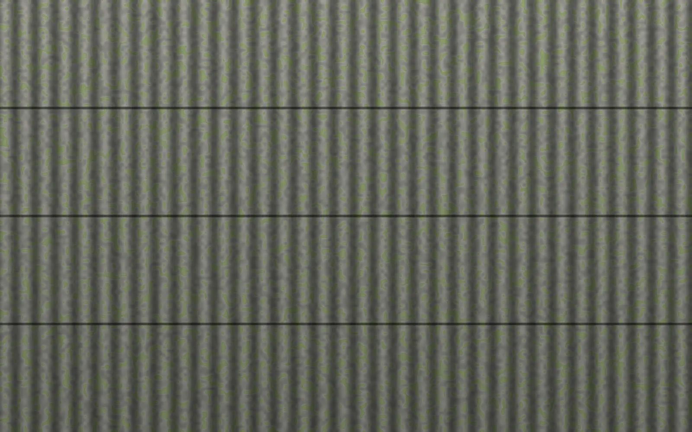
Plaques en fibrociment posées avant 1997 : un entretien sans grattage ni haute pression, avec un protocole amiante adapté.
Devis pour ce service
Remettez votre toiture à neuf pour protéger durablement votre maison et améliorer son confort thermique.
Devis pour ce service
Préservez la solidité de votre maison en protégeant la charpente contre les insectes xylophages, l’humidité et les champignons.
Devis pour ce service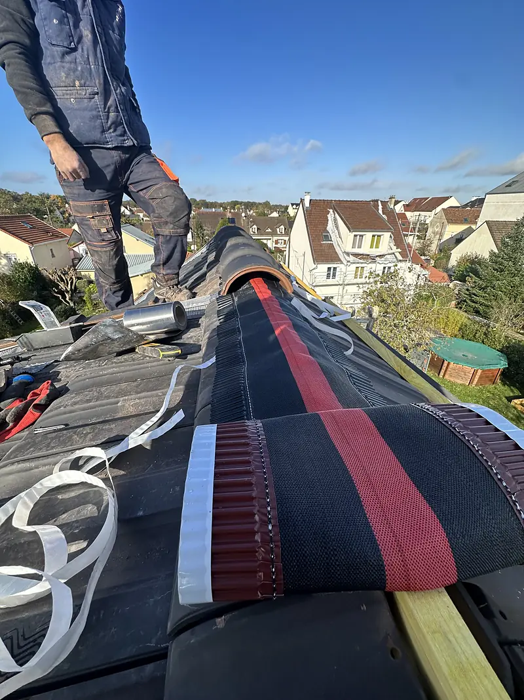
Optimisez la performance et le rendu de votre toiture grâce à des accessoires de qualité et des finitions soignées.
Devis pour ce service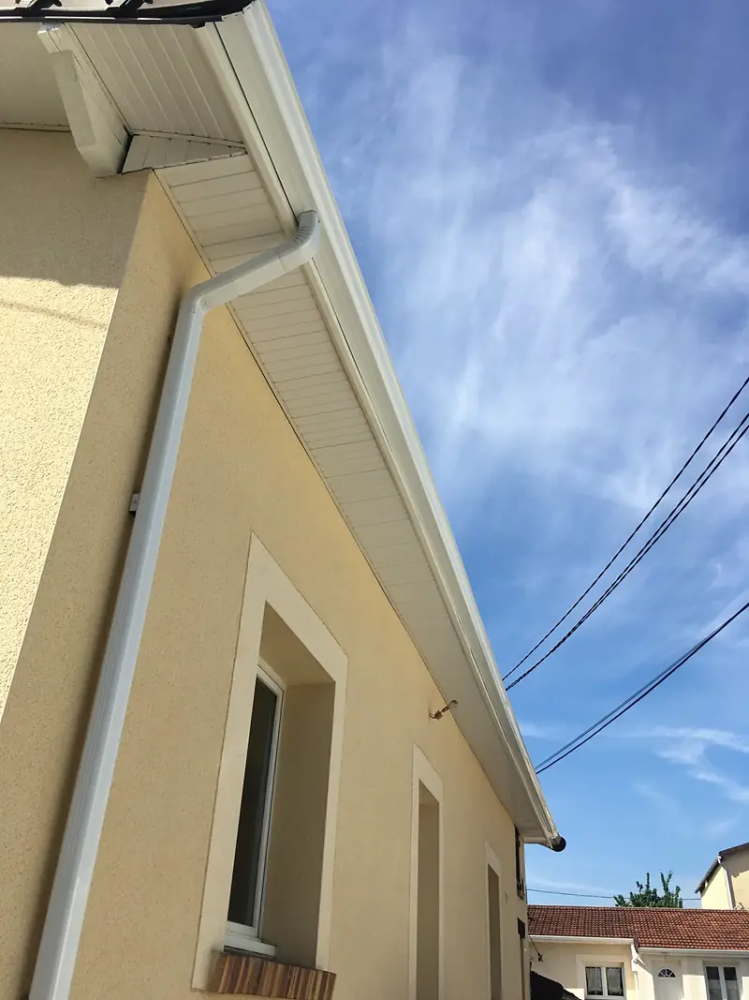
Assurez une évacuation efficace des eaux pluviales avec une gouttière bien posée, solide et adaptée à votre toiture.
Devis pour ce service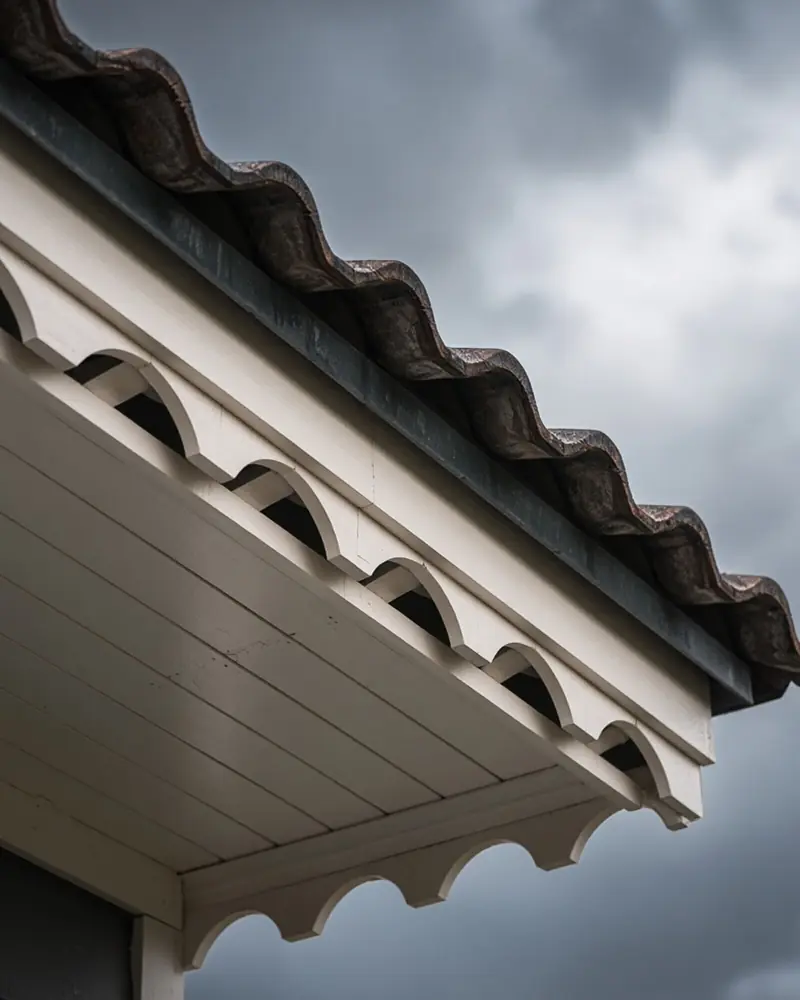
Protégez les dessous de toit avec des cache-moineaux esthétiques et durables, tout en évitant l’intrusion de nuisibles.
Devis pour ce service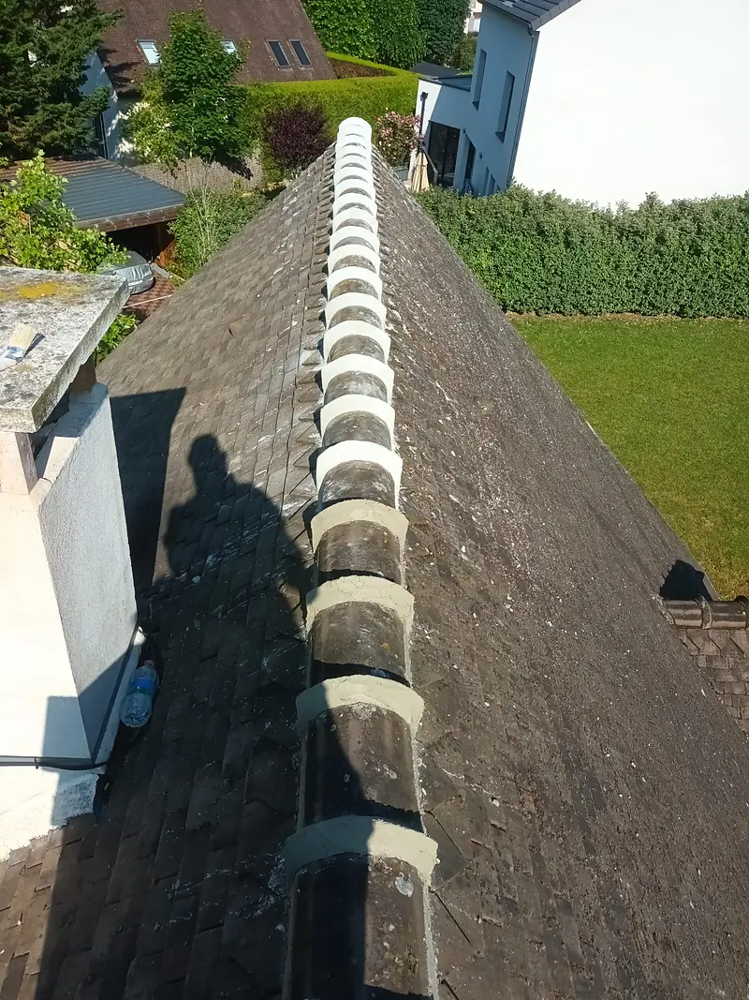
Assurez l’étanchéité et la solidité du sommet de votre toiture grâce à un faîtage réalisé dans les règles de l’art.
Devis pour ce service
Protégez les bords de votre toiture et offrez-lui une finition nette avec des bandes de rive solides et esthétiques.
Devis pour ce service
Lumière naturelle, confort et ventilation dans vos combles : pose ou remplacement de fenêtres de toit Velux, avec les finitions intérieures.
Devis pour ce service
Assurez l’étanchéité entre deux pans de toit grâce à une noue bien posée, solide et durable, en zinc notamment.
Devis pour ce service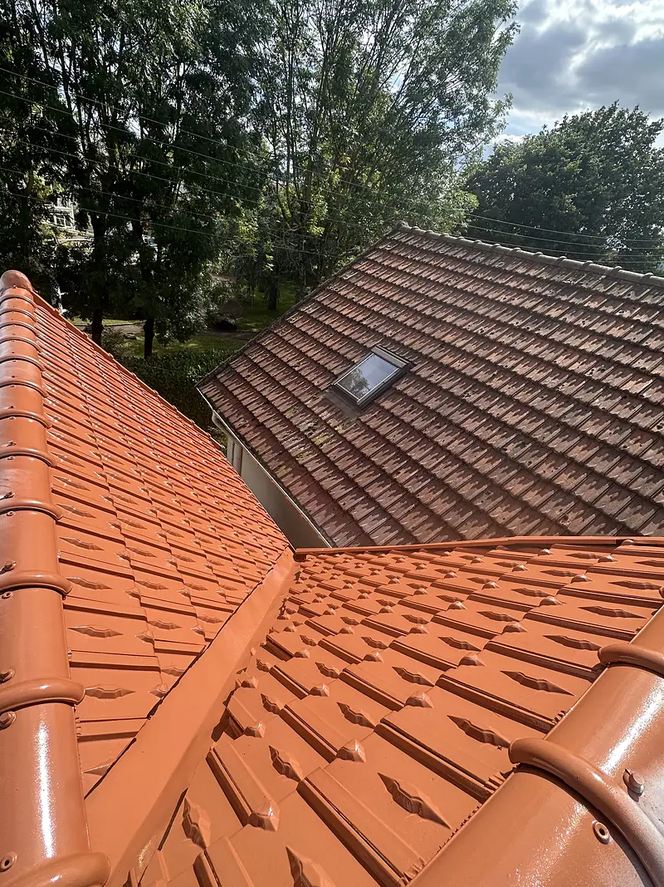
Offrez une seconde jeunesse à votre toit tout en le protégeant grâce à une peinture de toiture professionnelle.
Devis pour ce service
Assurez l’étanchéité entre votre toiture et les murs ou cheminées grâce à des solins bien posés et durables.
Devis pour ce serviceToiture en fibrociment amianté
Les plaques en fibrociment posées avant 1997 peuvent contenir de l’amiante. En bon état, elles ne présentent pas de risque particulier, mais un nettoyage mal mené peut libérer des fibres.
À valider attestations SS4 et protocole avec Samuel ; le repérage amiante avant travaux est fourni par le propriétaire via un opérateur certifié
Réalisations toiture
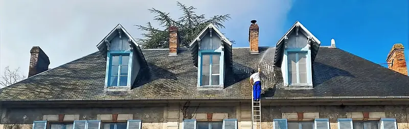
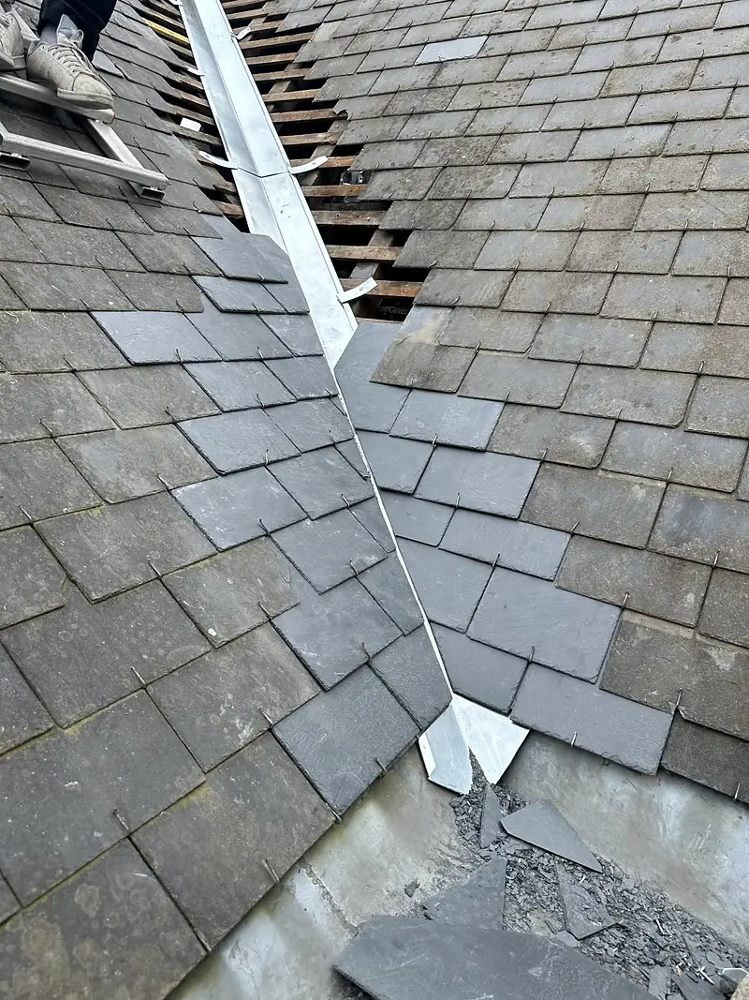
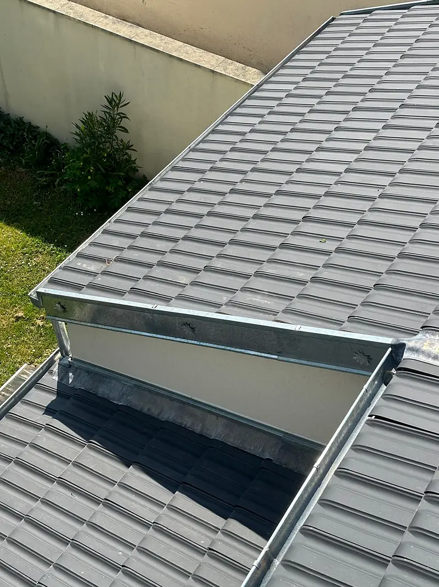
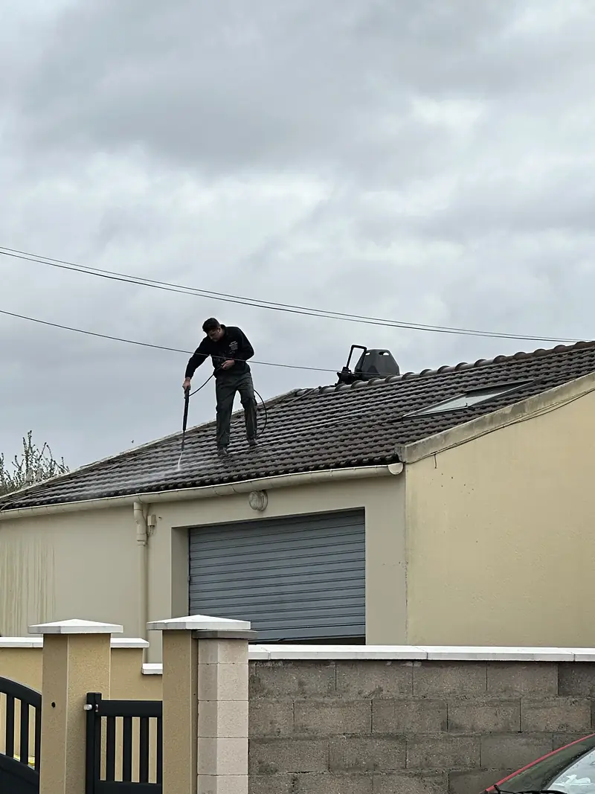
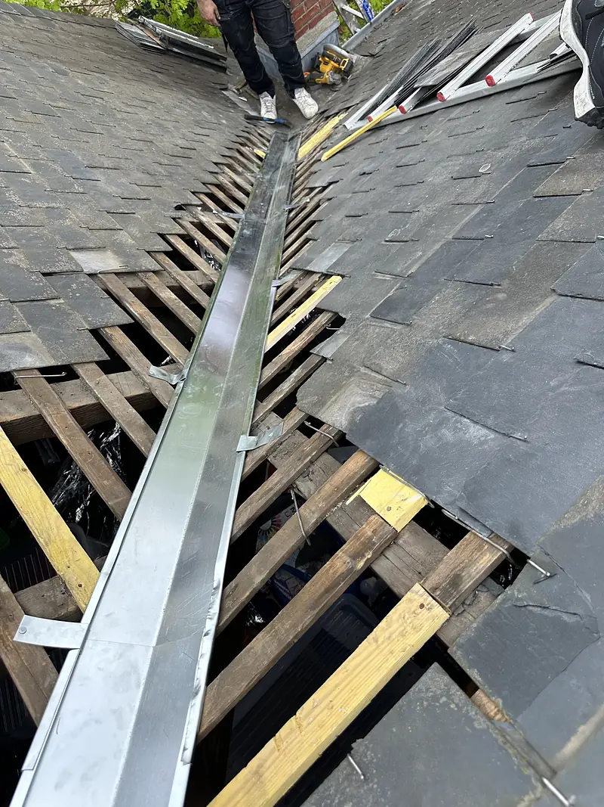
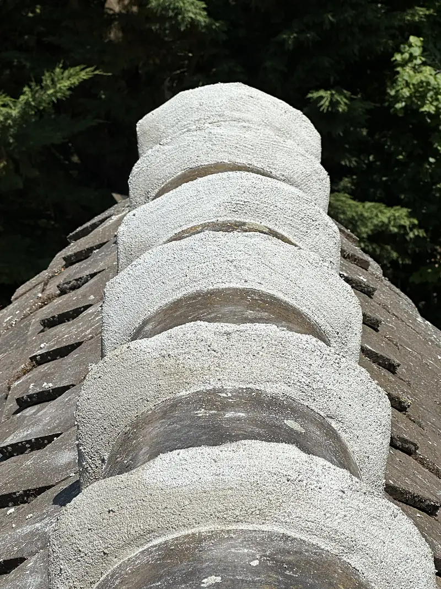
Une fuite, une mousse, un doute ?
Décrivez ce que vous voyez : vous saurez quoi faire, et le devis est gratuit.